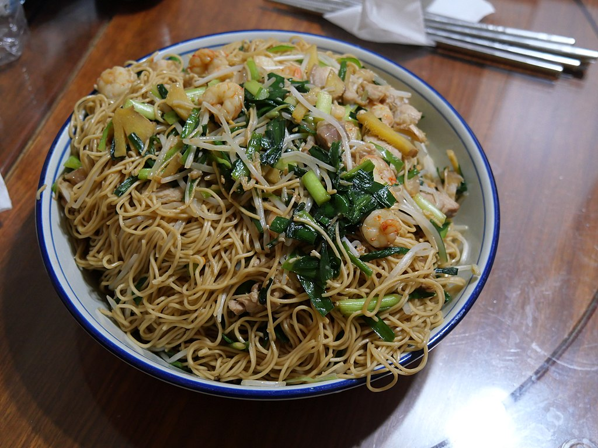

Chowmein

Description
A Chinese stir-fried noodle dish which is now a popular streetside food
dish across the globe, specifically in Asia. Being a popular dish across
countries, Chow mein is made in different ways with many different
variations in different places, this one here is the quickest and easiest
chowmein recipe, made under 30 minutes. Serve as a brunch or breakfast
that kids would just love. You can also serve this as an evening snack or
a side for an oriental dinner.
Ingredients
- 200 gms fresh noodles
- 5 cups water
- 1 tsp salt
- 2 tbsp oil
- 1 tsp ginger garlic paste
- 1 tsp chilli powder
- 1/4 cup onion, sliced
- 1/2 tsp soy sauce
- 1 tsp salt
- 1/4 cup celery, chopped
- 1 tsp vinegar
- 1 tsp chilli sauce
- 1 cup green and red capsicum
Steps
-
Take water in a pan, add salt followed by olive oil and bring to boil.
-
Add noodles and cook 'bite like' -- just blanch if fresh and cook longer
if dry.
-
Drain immediately and cool under running water till noodles are
thoroughly cooled.
-
Work 1 tablespoon of the oil into the noodles and leave in the colander
till required.
-
Keep aside a small bowl of green chilli dipped in vinegar for
garnishing.
-
Now, heat some oil in a heavy bottom pan and stir- fry garlic, ginger
garlic paste and onions over high heat till onions are golden brown..
-
Add celery and mushrooms followed by red and green capsicum along with
carrot. Stir well.
-
Now add salt, black pepper powder, tomato sauce, chilli sauce, soy sauce
and vinegar to veggie mixture. Mix well.
- Add the noodles to this and stir well till it is thoroughly mixed.
- Garnish with red capsicum and pour the prepared green-chilli vinegar mix on top.
- Serve hot.
Back to main menu.